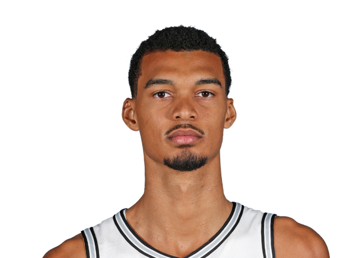
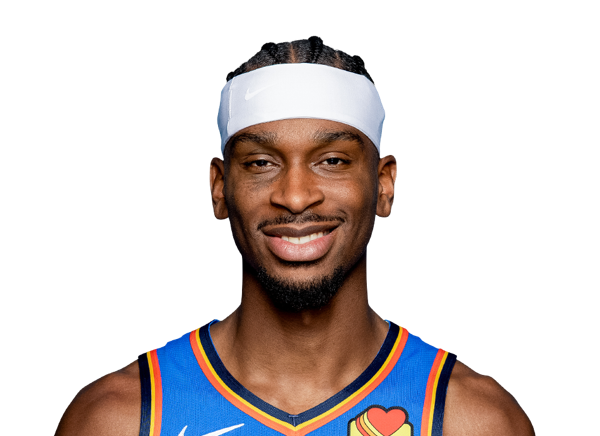
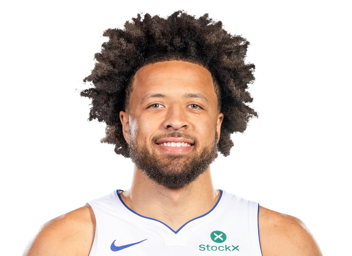
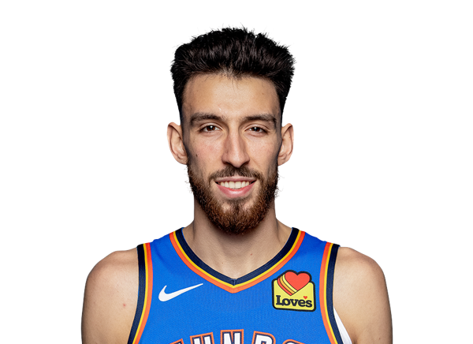
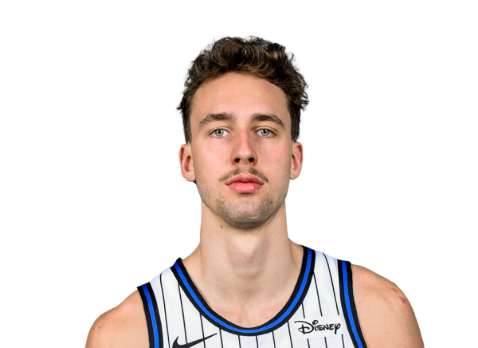
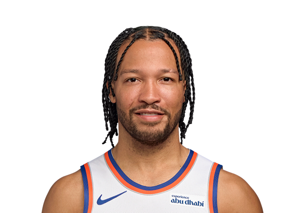
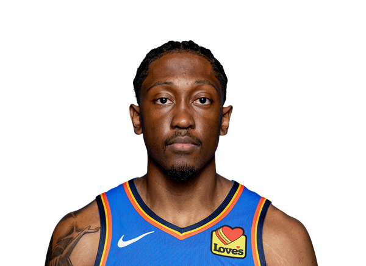

The Keep
Dynasty basketball
Top 10 · 18 boards · November 27, 2026
Full board- 1

12,000 - 2
 10,873
10,873 - 3

10,228 - 4
 9,769
9,769 - 5
 9,409
9,409 - 6

9,111 - 7
 8,855
8,855 - 8
 8,629
8,629 - 9

8,426 - 10

8,241
BASKETBALLKEEP
Dynasty · Redraft · Hardwood
Dynasty basketball
Updated November 27, 2026
The Keep
Top 10 · 18 boards · November 27, 2026
Full board
12,000
10,228
9,111
8,426
8,241The Board
Top 10 · this year only
Full board
9,111
8,241News
HOF Coach Says De’Aaron Fox Is Dealing With Injury That Resulted in Game 4 Mistake: “Shouldn’t Be Playing” Yahoo Sports
Joel Embiid (illness) downgraded to questionable Monday.
Pistons’ Cade Cunningham ruled out for Bucks game with knee injury Yahoo Sports
Dallas looks to keep stacking wins early in the season
Edey (ankle) is questionable for Friday's game against the Timberwolves. Visit RotoWire.com for more analysis on this update.
Insider Reveals Worrying News to Wizards Over Anthony Davis Trade BasketballNews.com
Jaylen Brown Injury: Not playing Friday RotoWire
LaMelo Ball Injury Update: Timberwolves Get Major News Before Grizzlies Game Yahoo Sports
Hart (shoulder) has been upgraded to probable for Wednesday's game against the Cavaliers. Visit RotoWire.com for more analysis on this updat
Jusuf Nurkic is QUESTIONABLE for tomorrow.